Querido diário, hoje é o grande dia, o começo de uma nova etapa na minha vida, o início do
meu sonho se realizando. Aprender um idioma novo e uma nova cultura em um país tão magnífico como a Nova Zelândia.
Antes de viajar, havia conversado com minha host family via e-mail. Minha casa teria uma estudante do Japão, uma
família kiwi com um host father que ama futebol brasileiro e uma host mother maravilhosa que ama gatos. Eu nunca
tinha viajado de avião. No meu primeiro voo, peguei no Aeroporto Internacional de São José dos Pinhais, no Paraná,
o estado em que eu moro, para chegar até o Aeroporto Internacional em Guarulhos. Para mais tarde, pegar uma
conexão em Santiago, no Chile, para chegar em Auckland, na Nova Zelândia.
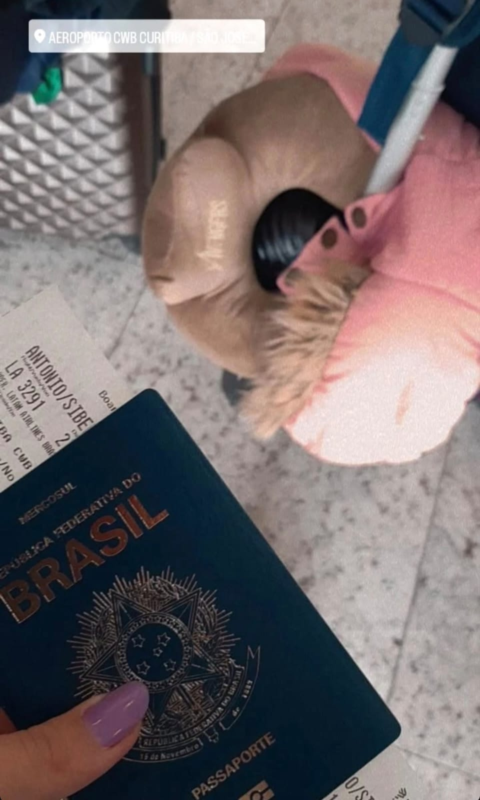
Passaporte com as passagens.Bandeira da minha cidade, Sertanópolis.
28/07/2022 Quinta-feira
Santiago - Chile
Foram cerca de três horas de voo, de Guarulhos até Santiago. Durante o voo, tivemos uma
parada em Mendoza na Argentina, para a entrada de novos
passageiros. Chegando a Santiago, jantamos e esperamos nosso próximo voo, que nos levaríamos a atravessar o Oceano
Atlântico.
O avião em cima do Oceâno Pacífico mostrado na tela.Informações da viagem.
29/07/2022 Sexta-feira
Auckland e Palmerston North - Nova Zelândia
Chegamos pela manhã no Aeroporto Internacional de Auckland. Tomamos café da manhã no
McDonald's e esperamos no aeroporto doméstico nosso voo para a cidade em que fomos acolhidos, Palmerston North.
Foi bem rápida nossa ida para nossa cidade, ao chegarmos lá, fomos muito bem recebidos pelos diretores de nossa
escola, Dave e Nikola. Eles levaram nós, brasileiros, para conhecermos a escola Freyberg High School. Foi
realmente um dia encantador, estava muito feliz em conhecer tanta coisa nova. Ficamos em uma sala onde havia
outros estudantes internacionais, onde eu conheci pela primeira vez a Wakana, a estudante do Japão que foi
recebida pela mesma host family que eu. Ficamos na escola até que meu host father, Peter, fosse nos buscar.
30/07/2022 Sábado
The Plaza - Palmerston North - Nova Zelândia
Shopping, comprar meu chip
01/08/2022 Domingo
Wellington - Nova Zelândia
Pela primeira vez, visitei a capital da Nova Zelândia. Meus dois host brothers moram lá.
Ao
chegarmos na cidade, estava um tempo nublado e com muito vento. Conhecemos um topo alto da cidade que dava para
ver
uma boa parte da cidade, era uma visão deslumbrante. Depois, o Peter levou a gente para conhecer o Parlamento da Nova Zelândia, são uns edifícios com uma
arquitetura
incrível.
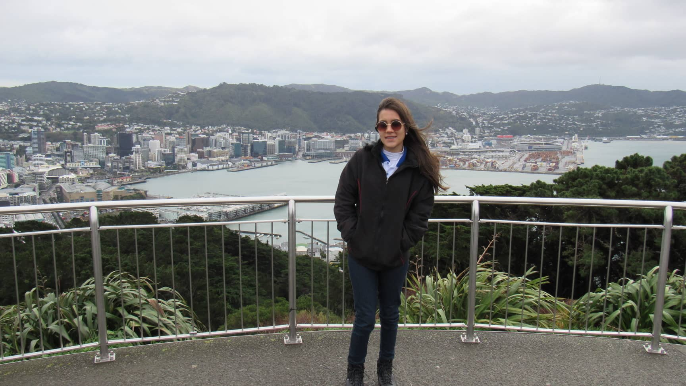
Em Wellington, capital da Nova Zelândia.
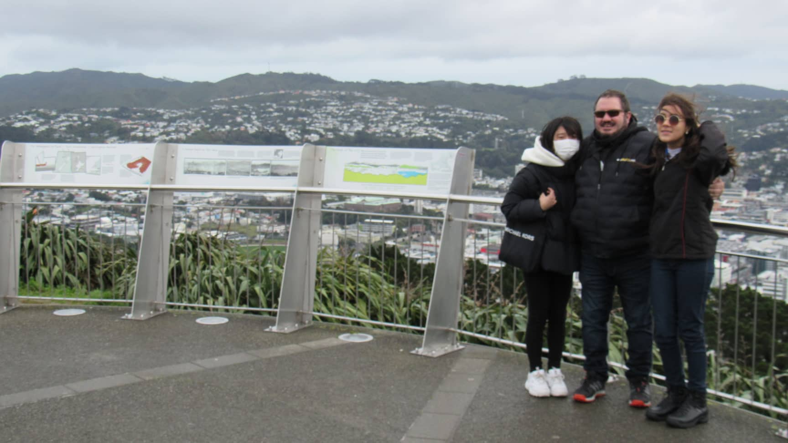
Wakana e Peter.
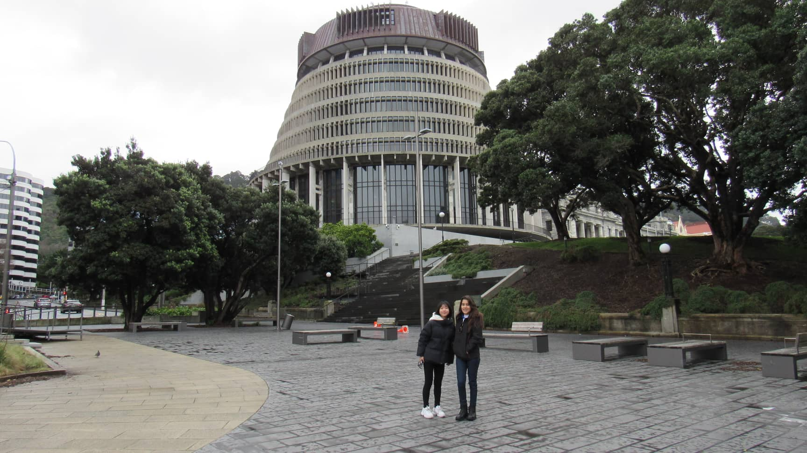
Parlamento da Nova Zelândia.
02/08/2022 Segunda-feira
Freyberg High School - Palmerston North - Nova Zelândia
Primeiro dia na Freyberg
05/08/2022 Sexta-feira
Twin Turfs - Palmerston North - Nova Zelândia
Assistir jogo de Hóquei com Peter e Wakana
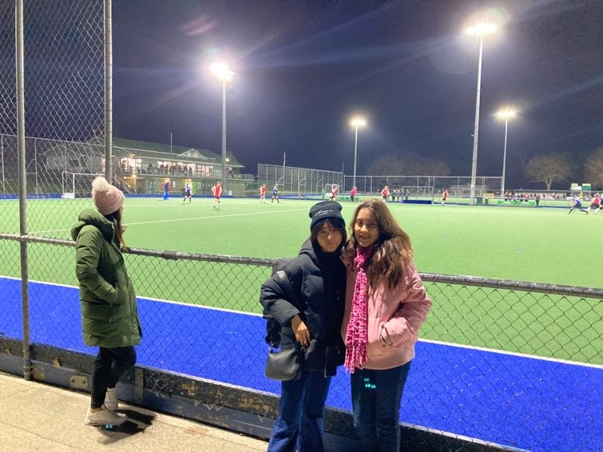
Assistindo jogo de hóquei.
06/08/2022 Sábado
The Plaza - Palmerston North - Nova Zelândia
Shopping com pessoal br
10/08/2022 Quarta-feira
The Plaza - Palmerston North - Nova Zelândia
Boliche e cinema, Thor
13/08/2022 Sábado
Lido Aquatic Centre - Palmerston North - Nova Zelândia
Parque Aquático com Wakana
14/08/2022 Domingo
Himatangi Beach - Palmerston North - Nova Zelândia
Praia com a host family
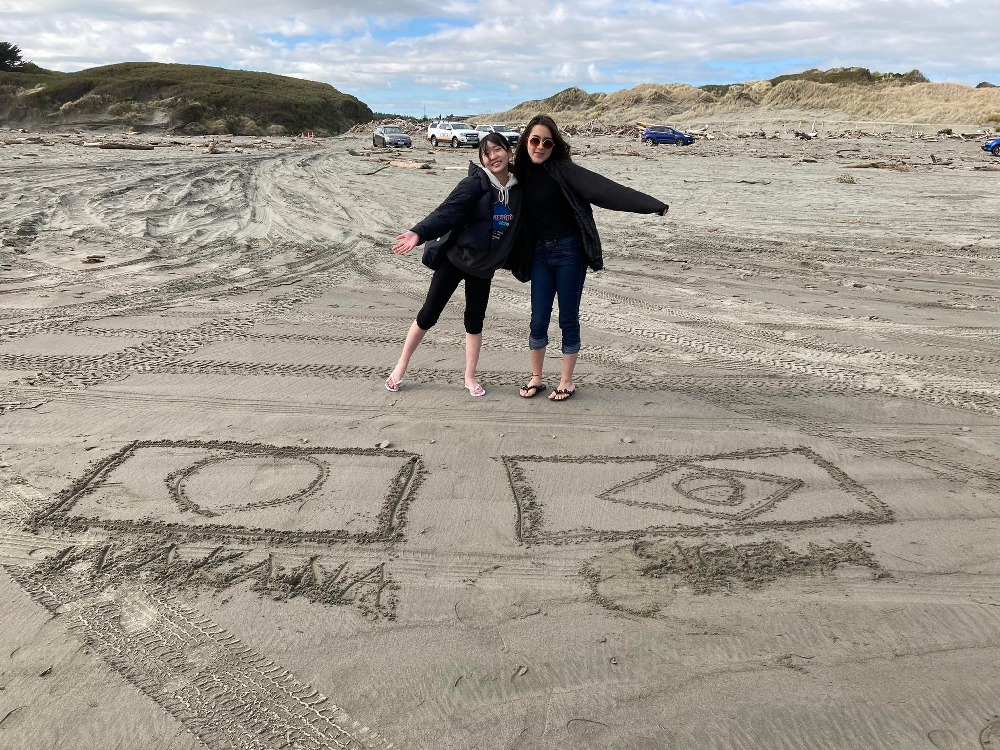
Na praia com Wakana.
20/08/2022 Sábado
Victoria Esplanade - Palmerston North - Nova Zelândia
Passeio com Kauan, Kristyna e Ronan
23/08/2022 Quinta-feira
Te Papa Tongarewa - Wellington - Nova Zelândia
Museu da Nova Zelândia Te Papa Tongarewa visita com a escola.
27/08/2022 Sábado
Whanganui e Bulls - Nova Zelândia
Passeio com a host family junto com Yuki.
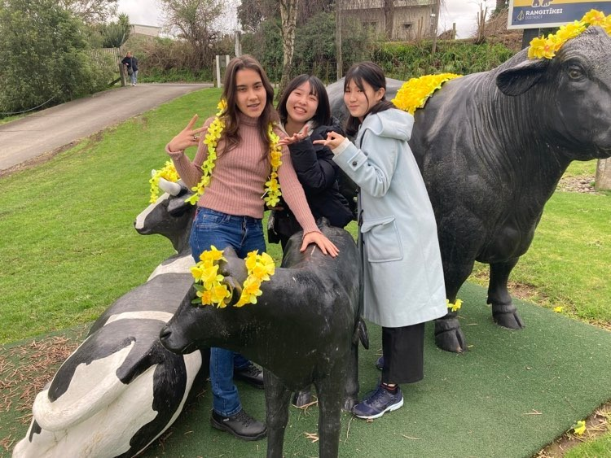
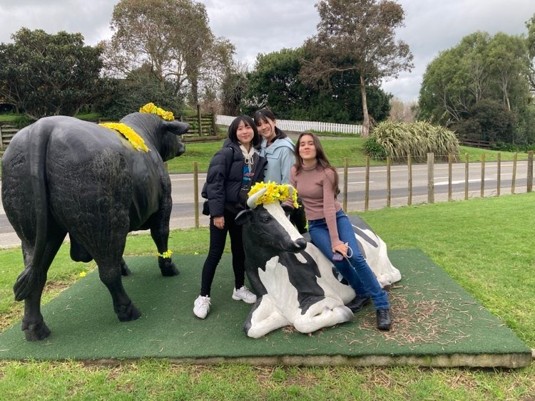
Foto em Bulls com Yuki e Wakana.
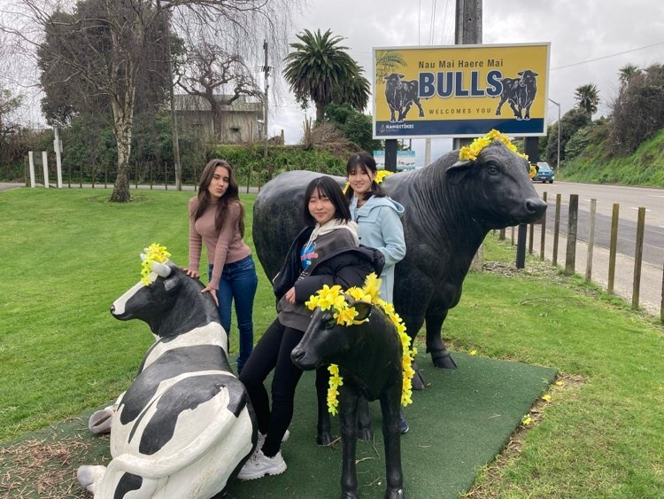
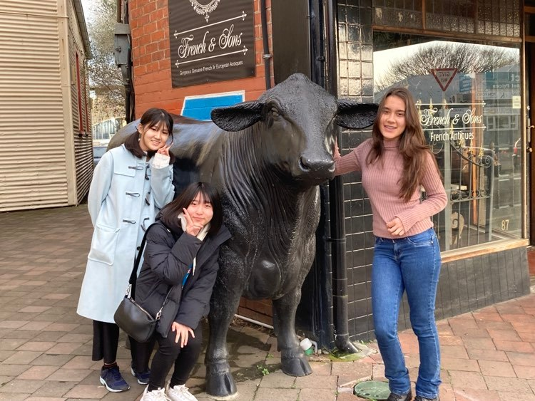
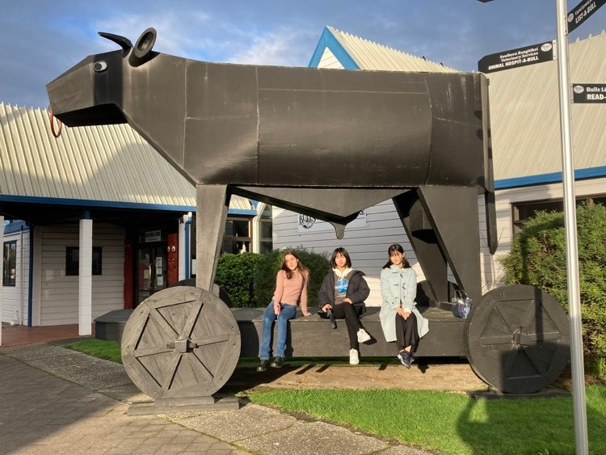
31/08/2022 Quarta-feira
Yuki's house - Palmerston North - Nova Zelândia
Jogos na casa da Yuki com Wakana.
27/08/2022 Sábado
Sledge Track - Palmerston North - Nova Zelândia
Trilha com Krystina e Kauan.
15/10/2022 Sábado
Fear Factory- Wellington e Palmerston North - Nova Zelândia
Fui com Peter e Bruna na Fear Factory em Wellington.